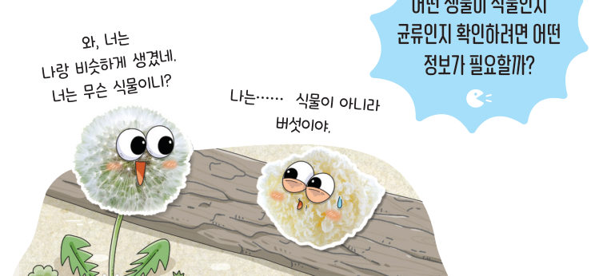
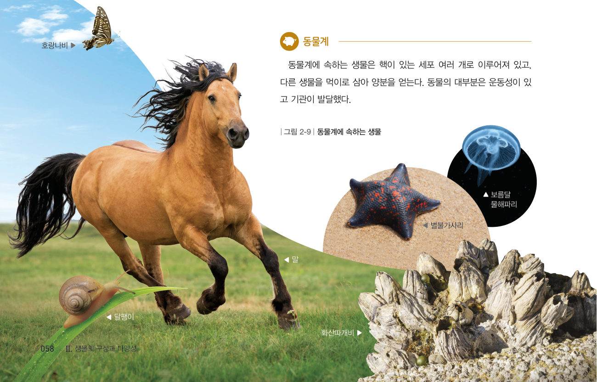
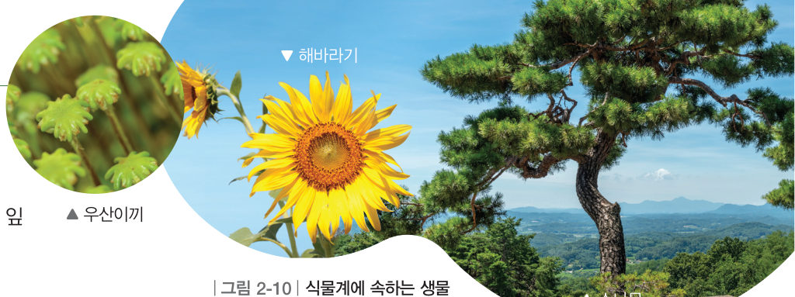
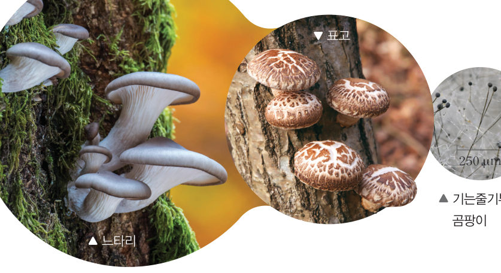
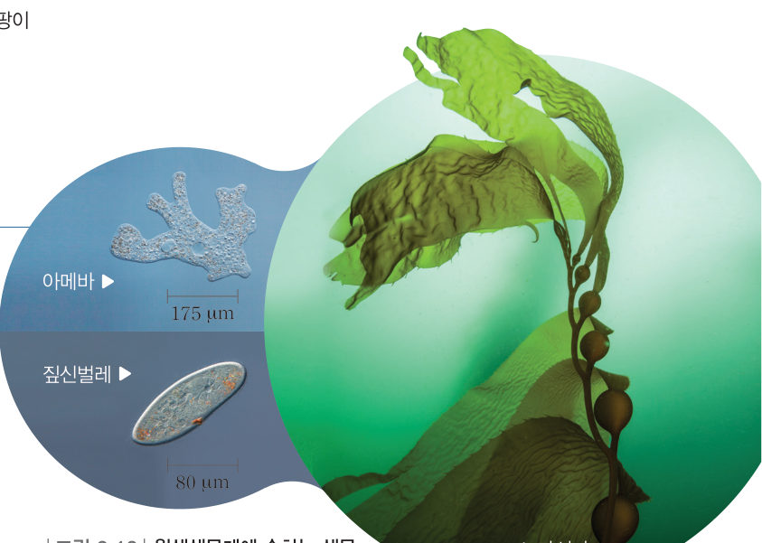
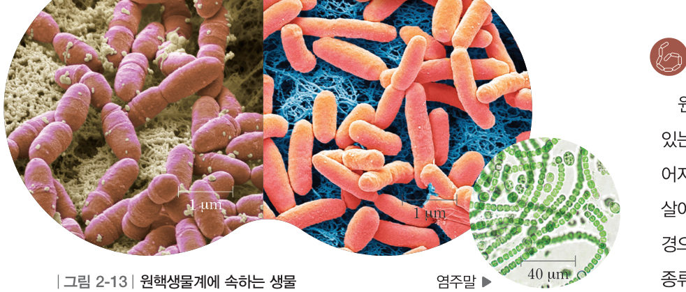
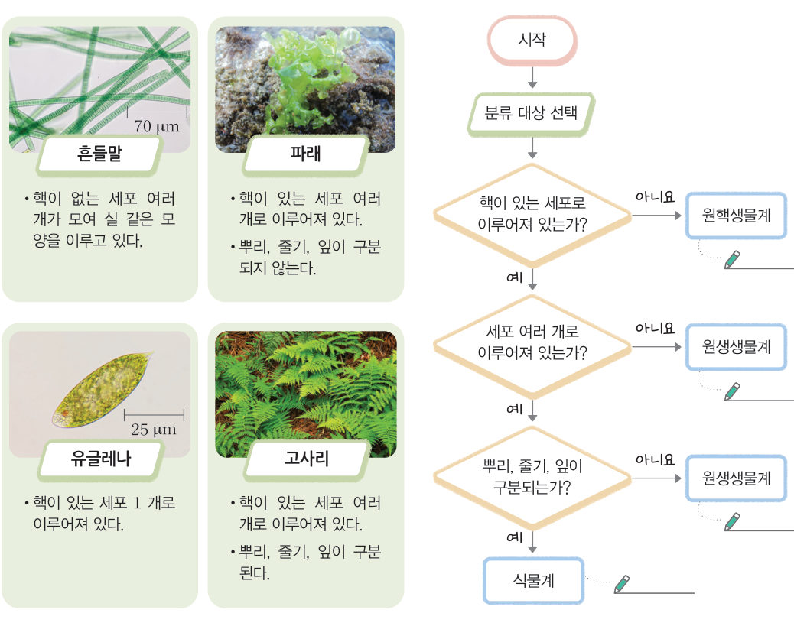
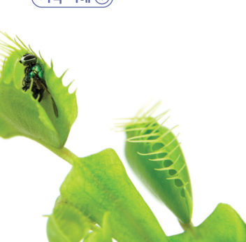
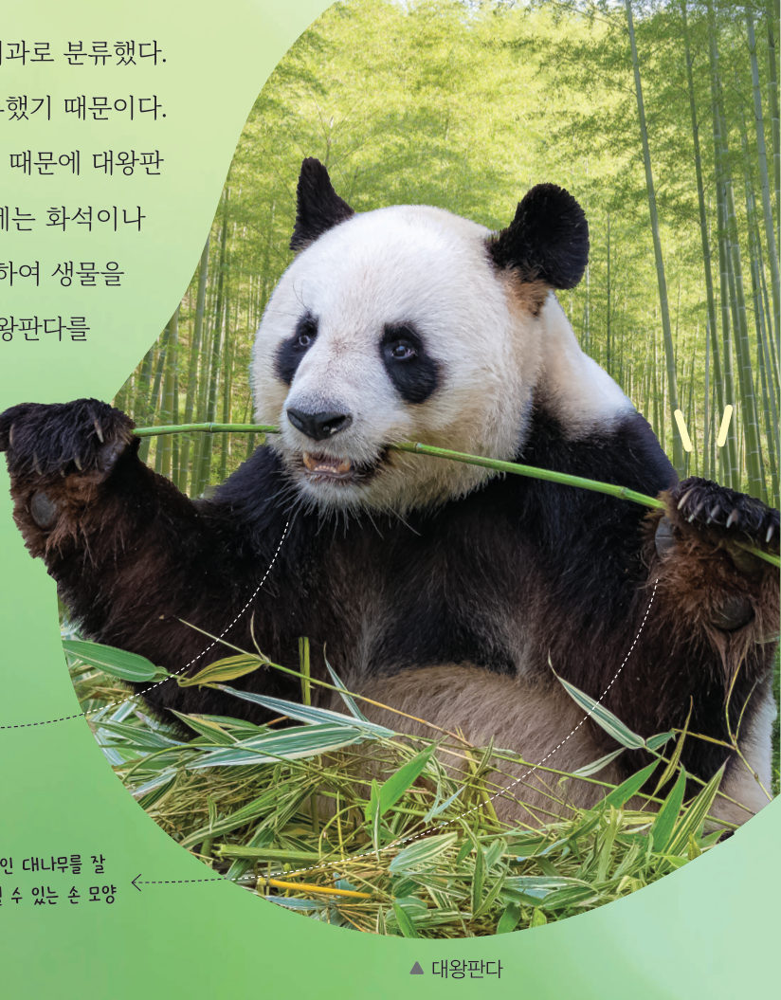
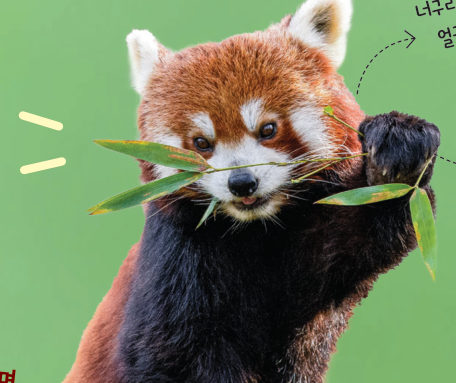

살아있는 교과서 · Ⅱ. 생물의 구성과 다양성 · 2. 생물다양성과 분류 · 03 58~61쪽
생물을
생물을
분류하는 체계
“와, 너는 나랑 비슷하게 생겼네. 너는 무슨 식물이니?” “나는…… 식물이 아니라 버섯이야.” 어떤 생물이 식물인지 균류인지 확인하려면 어떤 정보가 필요할까? 생물 카드의 단서로 5계를 가려내는 분류 탐정이 되어 보자.
🎯 이 단원을 배우면 — 생물의 분류체계를 설명할 수 있다.
교과서생물의 5계 58~59쪽
생물의 분류체계는 어떻게 이루어져 있을까?
18 세기에 린네(Linne, C. von, 1707~1778)가 생물을 동물계와 식물계로 분류한 이후, 과학이 발달함에 따라 생물의 분류체계는 계속 변해 왔다. 지구의 다양한 생물은 동물계, 식물계, 균계, 원생생물계, 원핵생물계의 5계로 ●분류할 수 있다.
●생물을 분류하는 기준 생물을 계 단위로 분류할 때는 세포 내 핵 유무, 광합성 여부 등을 기준으로 삼는다.
🐾 동물계
핵이 있는 세포 여러 개. 다른 생물을 먹이로 삼아 양분을 얻는다. 대부분 운동성이 있고 기관이 발달했다.
핵이 있는 세포 여러 개. 다른 생물을 먹이로 삼아 양분을 얻는다. 대부분 운동성이 있고 기관이 발달했다.
🌱 식물계
핵과 세포벽이 있는 세포 여러 개. 광합성을 하여 양분을 스스로 만든다. 대부분 뿌리·줄기·잎이 발달했고 육지에서 생활한다.
핵과 세포벽이 있는 세포 여러 개. 광합성을 하여 양분을 스스로 만든다. 대부분 뿌리·줄기·잎이 발달했고 육지에서 생활한다.
🍄 균계
핵이 있는 세포. 양분을 스스로 만들 수 없어 대부분 죽은 생물을 분해하여 양분을 얻는다. 버섯·곰팡이는 실 모양의 균사가 얽힌 구조.
핵이 있는 세포. 양분을 스스로 만들 수 없어 대부분 죽은 생물을 분해하여 양분을 얻는다. 버섯·곰팡이는 실 모양의 균사가 얽힌 구조.
🦠 원생생물계
핵이 있는 세포로 이루어진 생물 중 동물계·식물계·균계를 제외한 나머지. 대부분 세포 한 개이지만 여러 개인 것도 있다. 다시마처럼 광합성을 하는 종류도 있다.
핵이 있는 세포로 이루어진 생물 중 동물계·식물계·균계를 제외한 나머지. 대부분 세포 한 개이지만 여러 개인 것도 있다. 다시마처럼 광합성을 하는 종류도 있다.
🔬 원핵생물계
핵이 없고 세포벽이 있는 세포. 대부분 세포 한 개. 매우 작아 현미경으로 관찰해야 하고, 염주말처럼 광합성을 하는 종류도 있다.
핵이 없고 세포벽이 있는 세포. 대부분 세포 한 개. 매우 작아 현미경으로 관찰해야 하고, 염주말처럼 광합성을 하는 종류도 있다.





분류 탐정단서 카드로 5계 가려내기
생물 카드를 하나씩 뽑아 단서를 읽고 어느 계인지 골라 보자. 맞히면 다음 카드가 나와요. 틀리면 어떤 단서를 놓쳤는지 알려 줘요. 10 장을 모두 분류해 보자!
카드를 읽고 계를 골라 보세요.
해 보기광합성을 하는 생물 분류하기 60쪽
생물 중에는 서로 다른 계에 속하지만 특징이 비슷한 것도 있다. 순서도를 이해하여 광합성을 하는 생물을 계 수준으로 분류해 보자.

💬식물계에 속하는 생물은 무엇인지 말하고, 나머지 생물이 식물계에 속하지 않는 까닭을 각각 이야기해 보자.
스스로 확인하기58쪽 학습 목표를 달성했는지 확인해 보자 60쪽
1개념 확인 세포에 핵이 없는 생물은 ( )계로 분류한다.

2사고력 파리지옥은 덫처럼 생긴 잎으로 작은 벌레를 잡아먹지만 식물계로 분류하는 까닭을 설명해 보자.
🧩 두 번째 블록 · 힌트 조각 2 (60쪽)
잘피는 산호와 달리 광합성으로 ( )을/를 스스로 만들고, 바다 밑바닥에 뿌리를 내려 생활하므로 ( )계에 속한다. → 다음 조각은 ‘학교와 주변 지역의 생물 분류하기’에서!
과학이 톡첨단 과학기술로 분류한 대왕판다 61쪽


대왕판다는 곰과에 속하는 동물이지만 예전에는 너구리과로 분류했다. ‘판다’라는 이름을 지닌 레서판다를 이미 너구리과로 분류했기 때문이다. 과거에는 생물의 생김새, 행동 등을 분류 기준으로 삼았지만, 오늘날에는 화석이나 DNA를 분석하여 조상이 어떤 생물에 더 가까운지 판단하여 생물을 분류한다. 이에 따라 조상이 너구리보다 곰에 더 가까운 대왕판다를 곰과로 분류하게 되었다. 과학은 새로운 발견이나 증거 분석에 따라 계속 발전하고 있다.
1대왕판다를 곰과로 다시 분류하게 된 근거는 이다.
💡창의성 쏙! 생물과 관련하여 미래에 나타날 수 있는 직업을 예상하여 소개해 보자.
5분 테스트생물을 분류하는 체계
1지구의 다양한 생물은 동물계, 식물계, 균계, 원생생물계, 원핵생물계의 로 분류할 수 있다. 버섯이나 곰팡이와 같이 실 모양의 균사가 얽힌 구조로 된 생물은 로 분류한다. 5계 중 핵이 없는 것은?
2설명에 해당하는 계를 골라 보자.
| ④ 핵이 있고 여러 개의 세포로 이루어져 있으며 다른 생물을 먹이로 삼아 양분을 얻는다. 대부분 운동성이 있다. | |
| ⑤ 핵이 있고 대부분 죽은 생물의 몸을 분해하여 양분을 얻는다. 균사가 얽힌 구조로 되어 있다. | |
| ⑥ 핵이 있는 세포로 이루어진 생물 중 동물계, 식물계, 균계를 제외한 나머지이다. | |
| ⑦ 핵이 있고 여러 개의 세포로 이루어져 있으며 광합성을 하여 양분을 스스로 만든다. 대부분 뿌리, 줄기, 잎이 발달했다. | |
| ⑧ 핵이 없고 세포벽이 있는 세포로 이루어져 있다. 염주말처럼 광합성을 할 수 있는 종류도 있다. |
3⑨ 원생생물계: ⑴ 이 있다. ⑵ 다시마처럼 을 할 수 있는 종류도 있다. ⑶ 대부분 한 개로 이루어져 있지만 세포 여러 개로 이루어져 있는 것도 있다.
4⑩ 5계와 각 계에 속하는 생물을 짝지어 보자.
| ⑴ 동물계 | |
| ⑵ 식물계 | |
| ⑶ 균계 | |
| ⑷ 원생생물계 | |
| ⑸ 원핵생물계 |
스스로 정리하기생물의 분류체계 64쪽
3생물의 분류체계 — 5계
· 동물계: 핵이 있는 세포 여러 개, 운동성이 있으며, 다른 생물을 먹이로 삼아 양분을 얻는다.
· 식물계: 핵이 있는 세포 여러 개, 을/를 하여 스스로 양분을 만들며, 대부분 뿌리, 줄기, 잎이 발달했다.
· 균계: 핵이 있는 세포, 특히 버섯이나 곰팡이는 실 모양의 이/가 얽힌 구조이다.
· : 핵이 있는 세포로 이루어진 생물 중 동물계, 식물계, 균계를 제외한 나머지
· : 세포에 핵이 없고, 대부분 세포 한 개로 이루어져 있다.
· 식물계: 핵이 있는 세포 여러 개, 을/를 하여 스스로 양분을 만들며, 대부분 뿌리, 줄기, 잎이 발달했다.
· 균계: 핵이 있는 세포, 특히 버섯이나 곰팡이는 실 모양의 이/가 얽힌 구조이다.
· : 핵이 있는 세포로 이루어진 생물 중 동물계, 식물계, 균계를 제외한 나머지
· : 세포에 핵이 없고, 대부분 세포 한 개로 이루어져 있다.
제출학생 정보 · 제출하기
모든 활동을 마친 뒤 제출하면 전체가 한 번에 채점되고 피드백이 나타나요. 답안은 선생님 스프레드시트(중1 탭)에 기록돼요.